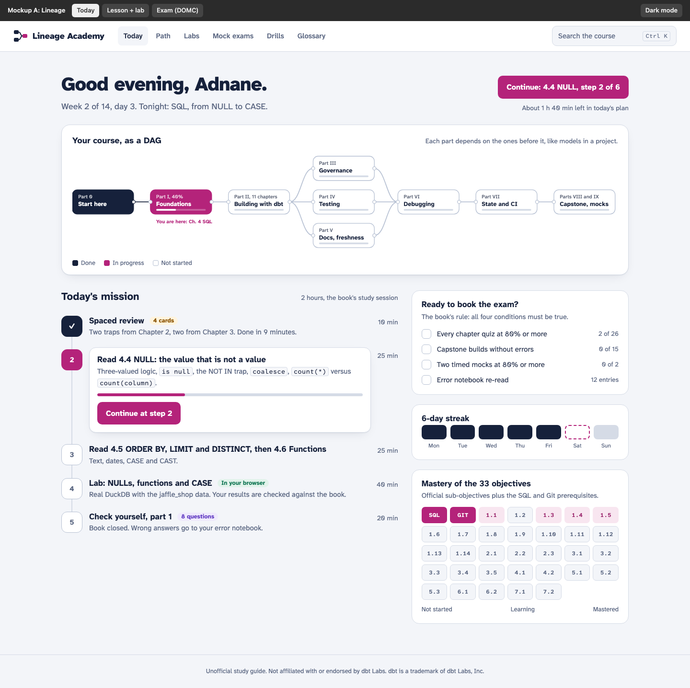
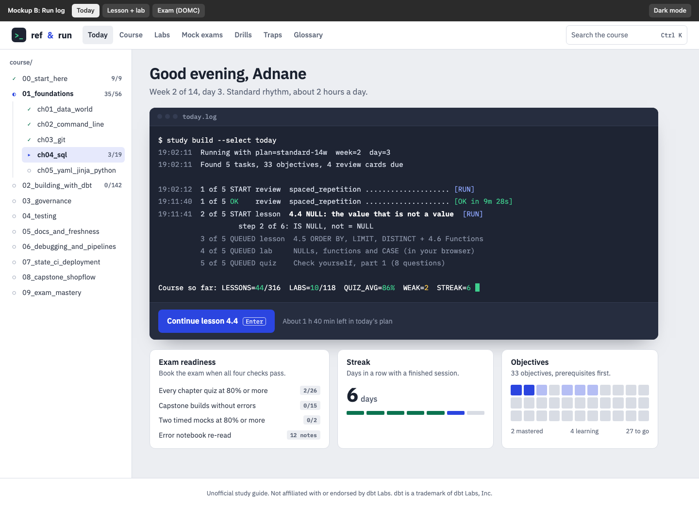
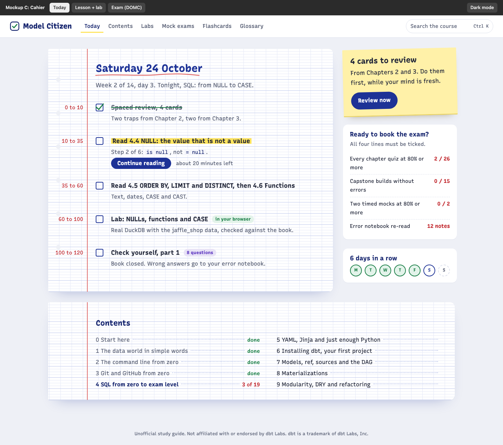

Three design directions
Each one shows the Today page, a lesson with its SQL lab, and a mock exam question in DOMC format. Click to open, then use the dark bar on top to switch screens and themes.

A. Lineage
Calm and precise. Your course is drawn as a DAG. Navy ink, magenta accent, Atkinson Hyperlegible type (made for easy reading).

B. Run log
Speaks dbt's language. Today's plan reads like a dbt run log, lessons sit next to a dark Codecademy-style workbench. IBM Plex type, cobalt accent.

C. Cahier
Warm and personal. A French school notebook: Seyès ruling, blue ink, red margin, highlighter, a sticky note. Recursive type.